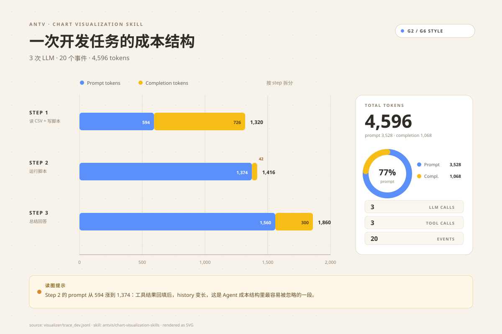
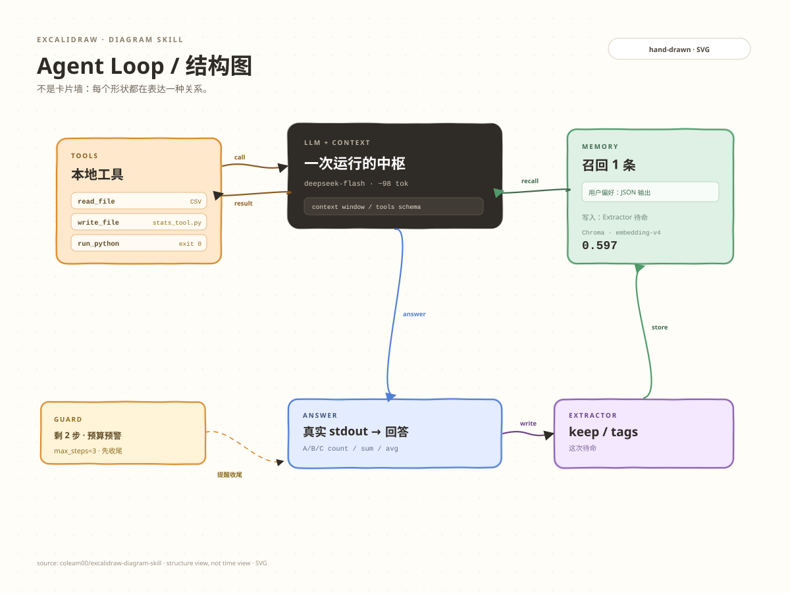
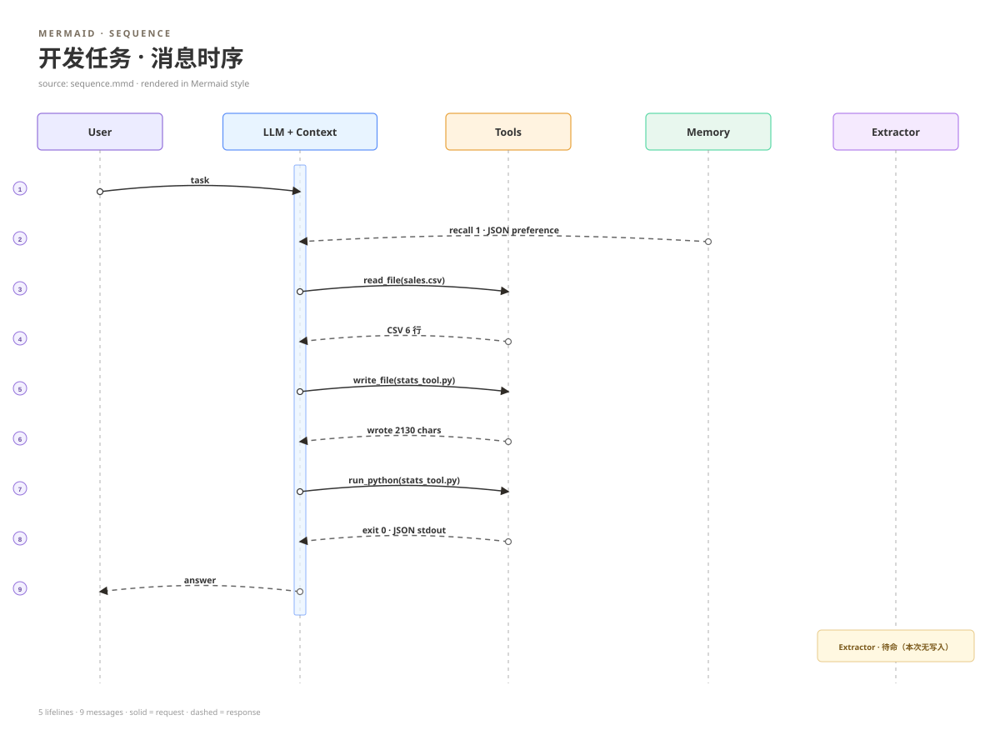
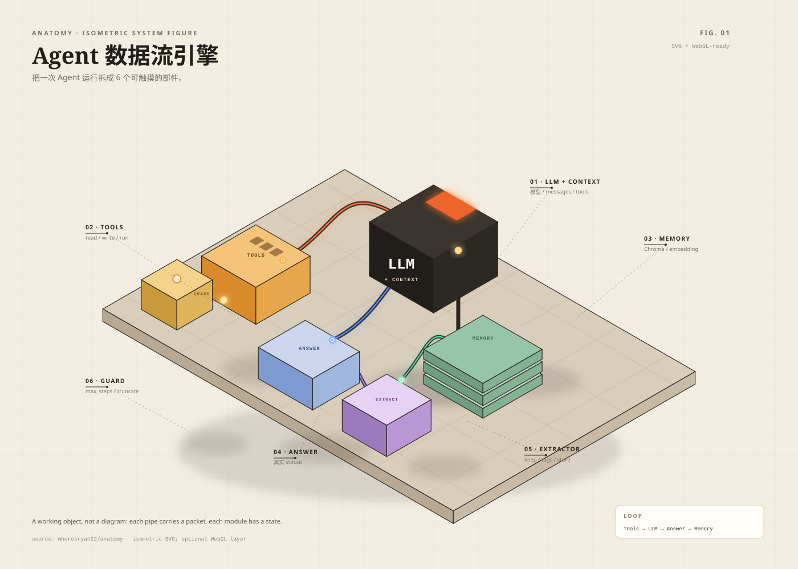

01 · ANTV · CHART VISUALIZATION
一次开发任务的成本结构
3 次 LLM 的 prompt / completion 堆叠，右侧环形 KPI；把“工具结果回填后 prompt 变长”直接标在图上。
打开 SVGantvis/chart-visualization-skills
用 5 个 GitHub 上的可视化 skill 规范，做 5 个可以直接打开的 demo：数据图表、手绘架构图、Mermaid 时序、等距技术插画、暗黑数据视频。

3 次 LLM 的 prompt / completion 堆叠，右侧环形 KPI；把“工具结果回填后 prompt 变长”直接标在图上。

不是卡片墙：Tools 的 call/result 是两条不同箭头，Answer → Extractor → Memory 单独成链，Guard 用 note 提醒收尾。

5 条生命线、9 条消息；实线是请求，虚线是响应。源文件是真 Mermaid `.mmd`，可以直接粘进文档。

把 LLM / Tools / Memory / Answer / Extractor / Guard 做成 6 个可触摸的部件；管线里各有一个 packet。
深黑 + 橙红光晕：标题 → 4,596 数字滚动 → 3 个任务卡片 → A/B/C JSON → 收尾。纯 Python + ffmpeg 渲染，1080×1080。
visualizer/trace_dev.jsonl 的真实开发 trace；Mermaid、SVG、MP4 的源文件都在对应目录里。